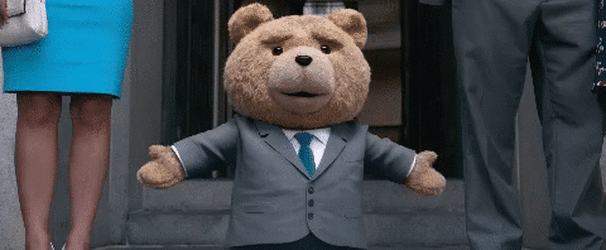

Un alt fel de TEDxTalk
Povestea este simplă, fantastică și comică: John Bennett (Mark Wahlberg) este un tip de 35 de ani care are un ursuleț de pluș viu, Ted (a cărui voce îi este dată tocmai de regizorul, scenaristul și producătorul filmului – Seth MacFarlane), magia care i-a dat viață acestui ursuleț de pluș a avut loc când John avea 8 ani și era genul de copil singuratic, fără prieteni, iar o stea căzătoare i-a împlinit dorința acestuia de a avea un prieten adevărat de care să nu se despartă niciodată.